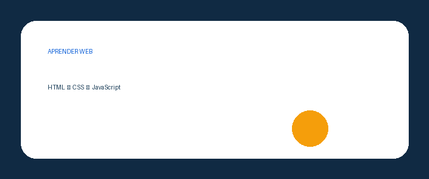

Aprendiendo HTML
Consejos básicos para comenzar a crear páginas web accesibles y semánticas.
Aprendé HTML, diseño web y accesibilidad de forma práctica.
⌨️ Navegación accesible: usá Tab para avanzar, Shift + Tab para volver y Enter para activar enlaces y botones.
Consejos básicos para comenzar a crear páginas web accesibles y semánticas.
Excelente contenido para comenzar.
